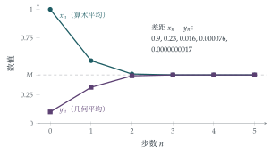

STEP II 2024，第 8 题
继续之前，请先阅读题目（原题为英文）。题目载于 OCR 提供下载的 2024 年 STEP 试卷（zip 文件）内的 STEP II 试卷： www.ocr.org.uk/Images/725753-2024-past-papers.zip
引子
取两个正数，例如 \(\sqrt2\) 和 \(1\)。把它们换成两者的算术平均（arithmetic mean）和几何平均（geometric mean）。再做一次，然后再做一次。结果如下：
| \(n\) | \(x_n\)（算术） | \(y_n\)（几何） |
|---|---|---|
| 0 | \(1.4142135623730950488\) | \(1\) |
| 1 | \(1.2071067811865475244\) | \(1.1892071150027210667\) |
| 2 | \(1.1981569480946342956\) | \(1.1981235214931201226\) |
| 3 | \(1.1981402347938772091\) | \(1.1981402346773072058\) |
| 4 | \(1.1981402347355922074\) | \(1.1981402347355922074\) |
只需四步，两个数便有二十位小数完全相同。它们的共同极限（limit）就是算术几何平均（arithmetic–geometric mean，简称 AGM）\(M(\sqrt2, 1) = 1.19814\ldots\)
1799 年 5 月 30 日，年仅 21 岁的高斯（Carl Friedrich Gauss）在日记中写道，他发现 \(1/M(\sqrt2, 1)\) 与一个常数有十一位小数相同，而这个常数出自一个完全不同的问题：一条称为双纽线（lemniscate）的曲线的弧长。他写道：“这必定会开辟一个全新的分析领域。”事实果然如此。本题要证明的，正是高斯这项发现背后的关键事实：AGM 能求出一个用任何常规方法都计算不了的积分。
动笔之前
为甚么两个不相等的正数的算术平均，总是大于它们的几何平均？你能用一行证明吗？
这就是算术几何平均不等式（AM–GM inequality），而第 (i) 部分的提示正好给出这个一行证明：当 \(x \neq y\) 时，\(\bigl(\sqrt{x} - \sqrt{y}\bigr)^2 > 0\)，展开后便是 \(x + y > 2\sqrt{xy}\)。第 (i) 部分的一切，都由这个不等式，以及“每个平均都介乎原来两个数之间”这个事实推出。
逐步解题
阶段 1 两个数列互相夹紧
若 \(y_n < x_n\)，则 \(\sqrt{x_n} \neq \sqrt{y_n}\)，所以 \(x_n - 2\sqrt{x_n y_n} + y_n > 0\)，即 \(x_{n+1} > y_{n+1}\)。由于 \(y_0 < x_0\)，用归纳法（induction）可知对所有 \(n\) 都有 \(y_n < x_n\)。
为甚么 \(x_n\) 与 \(y_n\) 的算术平均小于 \(x_n\)，而几何平均大于 \(y_n\)？
因为 \(y_n < x_n\)：\(x_{n+1} = \frac{x_n + y_n}{2} < \frac{x_n + x_n}{2} = x_n\)，而 \(y_{n+1} = \sqrt{x_n y_n} > \sqrt{y_n y_n} = y_n\)。所以 \[y_0 < y_1 < y_2 < \cdots < x_2 < x_1 < x_0.\] \(y_n\) 递增，并以 \(x_0\) 为上界（bounded above），所以根据题目所给的定理，它趋向一个极限 \(M\)。
至于两者的差距， \[x_{n+1} - y_{n+1} < x_{n+1} - y_n = \frac{x_n + y_n}{2} - y_n = \frac12(x_n - y_n),\] 而由第一部分可知它是正数。所以差距每次至少减半：\(0 < x_n - y_n < (x_0 - y_0)/2^n\)，而后者趋向 \(0\)。
最后，\(x_n = y_n + (x_n - y_n)\) 是一个趋向 \(M\) 的数列与一个趋向 \(0\) 的数列之和，所以 \(x_n \to M\) 亦成立。■
阶段 2 代换
这个代换（substitution）看来无缘无故，但它其实经过精心设计，令根号下的两个括号都变成完全平方（或接近完全平方）。
设 \(t = \frac12\left(x - \frac{pq}{x}\right)\)，计算 \(t^2 + pq\)。然后计算 \(t^2 + \frac14(p + q)^2\)。两者之中，有没有哪一个可以漂亮地因式分解？
首先， \[t^2 + pq = \frac14\left(x^2 - 2pq + \frac{p^2q^2}{x^2}\right) + pq = \frac14\left(x + \frac{pq}{x}\right)^2.\] 其次， \[\begin{aligned} t^2 + \tfrac14(p + q)^2 &= \frac14\left(x^2 - 2pq + \frac{p^2q^2}{x^2} + p^2 + 2pq + q^2\right) \\ &= \frac{x^4 + (p^2 + q^2)x^2 + p^2q^2}{4x^2} = \frac{(x^2 + p^2)(x^2 + q^2)}{4x^2}. \end{aligned}\] 另外 \(\dfrac{\mathrm{d}t}{\mathrm{d}x} = \dfrac12\left(1 + \dfrac{pq}{x^2}\right) = \dfrac{x^2 + pq}{2x^2}\)。
把以上结果合起来。当 \(x\) 由 \(0\) 走到 \(\infty\) 时，\(t\) 怎样变化？关于 \(t\) 的积分会变成甚么？
当 \(x\) 由 \(0\) 增加至 \(\infty\) 时，\(t\) 由 \(-\infty\) 递增至 \(\infty\)（因为它的导数是正数）。对 \(x > 0\)， \[\sqrt{\bigl(t^2 + \tfrac14(p+q)^2\bigr)\bigl(t^2 + pq\bigr)} = \frac{\sqrt{(x^2+p^2)(x^2+q^2)}}{2x} \cdot \frac{x^2 + pq}{2x},\] 所以 \[\frac{\mathrm{d}t}{\sqrt{\cdots}} = \frac{x^2 + pq}{2x^2} \cdot \frac{4x^2}{(x^2 + pq)\sqrt{(x^2+p^2)(x^2+q^2)}}\,\mathrm{d}x = \frac{2\,\mathrm{d}x}{\sqrt{(x^2+p^2)(x^2+q^2)}}.\] 因此关于 \(t\) 的积分等于 \(2\,\mathrm{I}(p, q)\)。
另一方面，关于 \(t\) 的积分与 \(\mathrm{I}\) 的形式完全一样，只是 \(p\) 和 \(q\) 分别换成了 \(\frac12(p+q) = \mathrm{a}(p, q)\) 和 \(\sqrt{pq} = \mathrm{g}(p, q)\)，而且积分范围是整条实数线。被积函数（integrand）是 \(t\) 的偶函数（even function），所以关于 \(t\) 的积分等于 \(2\,\mathrm{I}\bigl(\mathrm{a}(p,q), \mathrm{g}(p,q)\bigr)\)。两者比较，得 \[\mathrm{I}(p, q) = \mathrm{I}\bigl(\mathrm{a}(p, q), \mathrm{g}(p, q)\bigr). \qed\]
阶段 3 求积分的值
由 \((x_0, y_0)\) 开始，反复应用这个恒等式。经过 \(n\) 步之后，\(\mathrm{I}(x_0, y_0)\) 等于甚么？当 \(n \to \infty\) 时又会怎样？
对每个 \(n\)，\(\mathrm{I}(x_0, y_0) = \mathrm{I}(x_1, y_1) = \mathrm{I}(x_2, y_2) = \cdots = \mathrm{I}(x_n, y_n)\)。当 \(n \to \infty\) 时，两个变量都趋向 \(M\)，而 \[\mathrm{I}(M, M) = \int_0^\infty \frac{\mathrm{d}x}{M^2 + x^2} = \left[\frac1M \arctan\frac{x}{M}\right]_0^\infty = \frac{\pi}{2M}.\] 所以 \[\mathrm{I}(x_0, y_0) = \frac{\pi}{2M}. \qed\]
题目容许我们直接接受“\(\mathrm{I}(x_n, y_n) \to \mathrm{I}(M, M)\)”这一步，但其实可以简洁地加以证明。把 \(p\) 或 \(q\) 增大，被积函数便会变小，而 \(y_n < x_n\)，所以 \[\frac{\pi}{2x_n} = \mathrm{I}(x_n, x_n) < \mathrm{I}(x_n, y_n) < \mathrm{I}(y_n, y_n) = \frac{\pi}{2y_n}.\] 上下两个界都趋向 \(\frac{\pi}{2M}\)，而对每个 \(n\)，\(\mathrm{I}(x_n, y_n)\) 都是同一个数 \(\mathrm{I}(x_0, y_0)\)，所以它必定等于 \(\frac{\pi}{2M}\)。这又是一次夹逼（squeeze），与 第 2.4 节 中的做法一样。

回顾
两个单调数列互相夹紧。一个上升，一个下降，而两者的差距缩小至零。要证明两个数列有共同极限，这是最干净利落的方法。
不变量（invariant）。\(\mathrm{I}(x_n, y_n)\) 这个量在每一步都保持不变。在其他一切都在变动时，找出某样固定不变的东西，是数学中最有力的想法之一。
巧妙的代换是设计出来的，不是猜出来的。选用这个代换，正是为了令根号下的式子可以因式分解。
背后的数学
第 (i) 部分证明了差距每一步至少减半，这相当于每一步大约多得一个二进制位。引子中的表格所显示的却惊人得多：正确位数每一步大约增加一倍（\(2, 4, 10, 21, 43, \ldots\)）。事实上 \[x_{n+1} - y_{n+1} = \frac12\bigl(\sqrt{x_n} - \sqrt{y_n}\bigr)^2 = \frac{(x_n - y_n)^2}{2\bigl(\sqrt{x_n} + \sqrt{y_n}\bigr)^2},\] 所以每个差距大约是一个常数乘以前一个差距的平方。这称为二次收敛（quadratic convergence），我们会在 第 2.7 节 中仔细探讨。
椭圆积分
我们的积分 \(\mathrm{I}(p, q)\) 其实是一个乔装了的完全椭圆积分（complete elliptic integral）。这类积分在计算椭圆的弧长时出现，而且不能用你所认识的函数表示。它最著名的应用是单摆。高级程度（A-level）课程中的周期公式 \(T = 2\pi\sqrt{L/g}\) 只是小幅度摆动时的近似。由角度 \(\theta_0\) 释放的单摆，其准确周期是 \[T = \frac{2\pi\sqrt{L/g}}{M\bigl(1, \cos\frac{\theta_0}{2}\bigr)},\] 这是一个可用 AGM 求值的椭圆积分。当 \(\theta_0 = 90^\circ\) 时，真正的周期比简单公式所预测的长约 \(18\%\)。高斯那则日记所谈的是双纽线，一条 8 字形的曲线，它的总弧长涉及 \(\int_0^1 \frac{\mathrm{d}t}{\sqrt{1-t^4}}\)；这个积分其实就是乔装了的 \(\mathrm{I}(\sqrt2, 1)\)，所以可以用 AGM 求值。
计算 \(\pi\)
1976 年，Richard Brent 与 Eugene Salamin 各自独立地把高斯的想法变成一个计算 \(\pi\) 的算法（algorithm），每一步都令正确位数增加一倍。二十五步便可得出数千万位。在 1980 及 1990 年代，这类算法曾用于多次刷新纪录的 \(\pi\) 计算；时至今日，凡是需要高精度的地方，类似的二次收敛算法已成为标准工具。试比较 第 2.5 节 中的韦达（Viète）乘积，它每一步只多得约 \(0.6\) 位。
思维技巧
当一个过程同时改变许多东西时，找出一个不变的量。然后在过程的终点求它的值，因为那里一切都很简单。
在这里，过程就是 AGM 的每一步，而不变量就是积分 \(\mathrm{I}\)。在过程的终点，两个变量相等，积分变成初等积分。不变量在数学中随处可见，由力学中的能量守恒（第 10 章），以至证明某些谜题无解。
延伸练习
二次收敛。证明恒等式 \(x_{n+1} - y_{n+1} = \dfrac{(x_n - y_n)^2}{2(\sqrt{x_n} + \sqrt{y_n})^2}\)，并由此推出 \(x_{n+1} - y_{n+1} \leq \dfrac{(x_n - y_n)^2}{8 y_0}\)。
亲手计算。用计算机求 \(M(2, 1)\)，准确至六位小数。你需要多少步？
缩放。证明对 \(\lambda > 0\) 有 \(M(\lambda x, \lambda y) = \lambda M(x, y)\)，以及 \(\mathrm{I}(\lambda p, \lambda q) = \lambda^{-1}\mathrm{I}(p, q)\)。验证这两个事实与 \(\mathrm{I}(x_0, y_0) = \pi/(2M)\) 互相吻合。
单摆。利用上面的公式，求由 \(60^\circ\) 释放的单摆的周期比小角度近似的预测值长多少，答案准确至三位有效数字。
延伸阅读
David Cox, “The arithmetic–geometric mean of Gauss”, L’Enseignement Mathématique 30 (1984)。讲述这段历史和有关数学的经典文章；开首几节只需要微积分知识。
Jonathan Borwein & Peter Borwein, Pi and the AGM (Wiley)。关于 AGM 与 \(\pi\) 的快速计算的权威著作。
Jonathan Borwein & Keith Devlin, The Computer as Crucible (A. K. Peters)。讲述实验数学，包括像高斯那样凭着留意数值上的巧合而得出的发现。